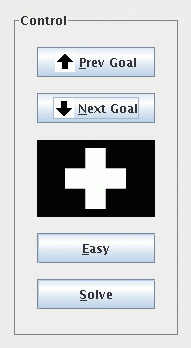
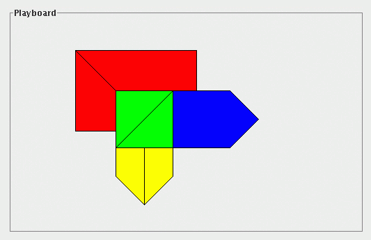

|
|
|
|
This document takes some liberty with the terminology. Each piece of Tangram is called a tan and a configuration of pieces is called a tangram (lower case). In this document, the words "tan" and "tangram" denote a piece and a configuration of a dissecting puzzle of the program whether or not the puzzle is Tangram.
Figure 1. The menu.
 Figure 2. The Control.
 Figure 3. The Playboard.
Figure 4. The goal view.
The Control contains 4 buttons and a small black area with a white shape centered inside. The black area is the goal view and the white shape inside it is a tangram referred to as the current goal. The buttons select the current goal and some options about it.
The colored polygons in the Playboard are the tans. The tans can be dragged, rotated and flipped with the mouse. The purpose of a game is to arrange the tans in a shape similar to the tangram shown by the current goal.
The button labeled Solve shows the solution of the game in the current goal.
To add a new tangram, place the tans in the desired configuration and choose the add item in the Goals menu entry. The newly added tangram is placed after the current goal and it becomes the new current goal.
Every configuration of tans can be made into a tangram. But configurations with overlapping tans should be avoided. The Easy option does not handle these configurations correctly.
The database of tangrams may be permanently saved to disk. This feature is affected by how the program is started and by the permission to write on the local disk. To save the database choose the save item in the Goals menu entry. The choice may be disabled or fail depending on the above conditions.
The mouse enables the following actions. See the "Using keyboard keys" section below for some alternatives to mouse actions.
A rotation is always by 45 degrees.
Mouse action Tan behavior left down bring to top any drag move right click rotate counterclockwise middle click rotate clockwise left double click flip
The corners of the tans attract each other when they are in proximity. This feature eases the placement of tans. This feature may preclude some small movements that would put two corners a few pixels apart.
Several sets of tans may be available in the program. A set of tans can be selected with the Open item in the File menu entry.
The program default settings, except for the configuration of the tans, can be restored with the Default item in the File menu entry.
The Easy option is local to the current tangram. The menu allows setting this option permanently with the Always easy item in the Options menu entry.
An audible sound can be produced when the corners of two tans touch, i.e., the tans fall in place. By default, the sound is disabled. It can be enabled by toggling the Quiet item in the Options menu entry.
The Goals menu entry supports the manipulations of tangrams as discussed earlier.
The Help menu entry provides information about the program.
In particular, the tans can be moved using only the left button. When the left button is down on a Tan, the keys enable the following actions.
Key Tan behavior R rotate counterclockwise T rotate clockwise F flip
The case, i.e., upper vs. lower, of a key is irrelevant.
Copyright © 1996-2008 by S. Antoy. All Rights Reserved. Version 0.86 of 7/23/2008.
![[goal view]](./goalview.gif)